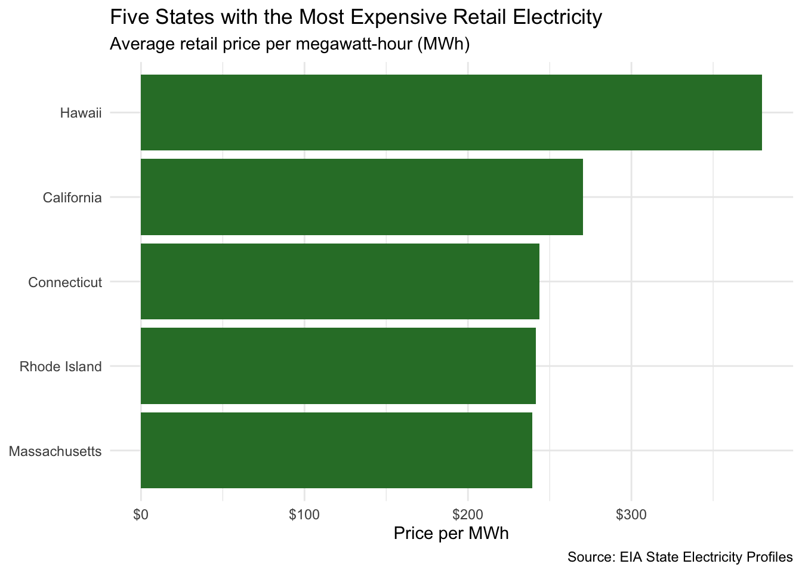
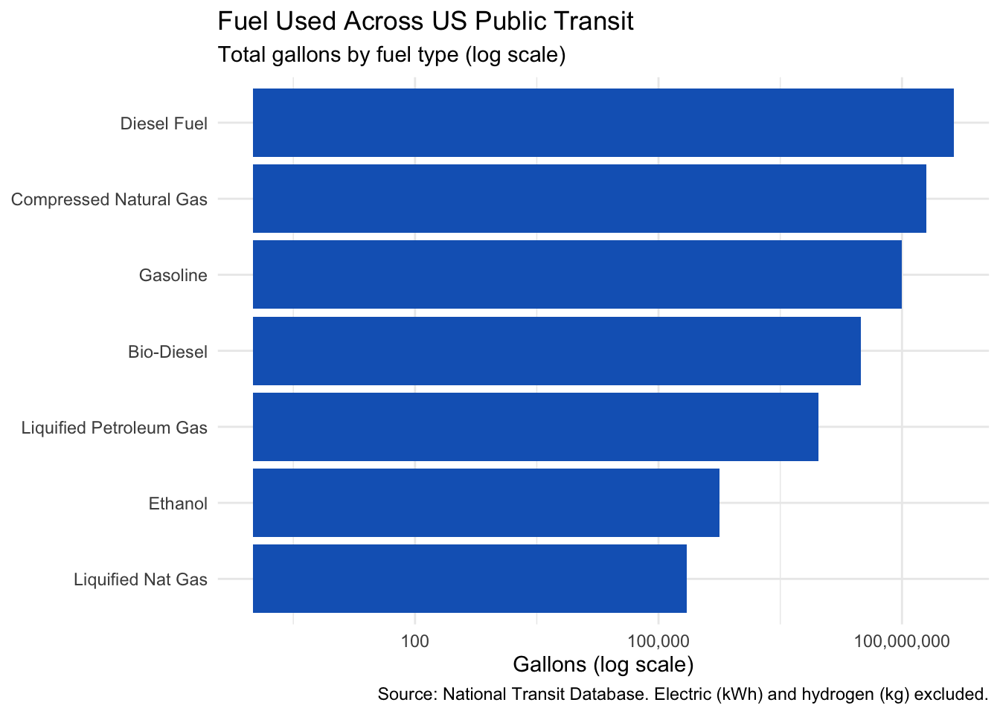
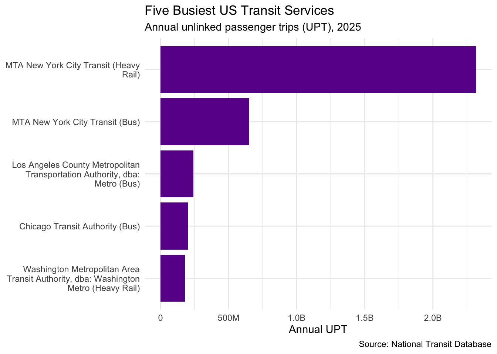
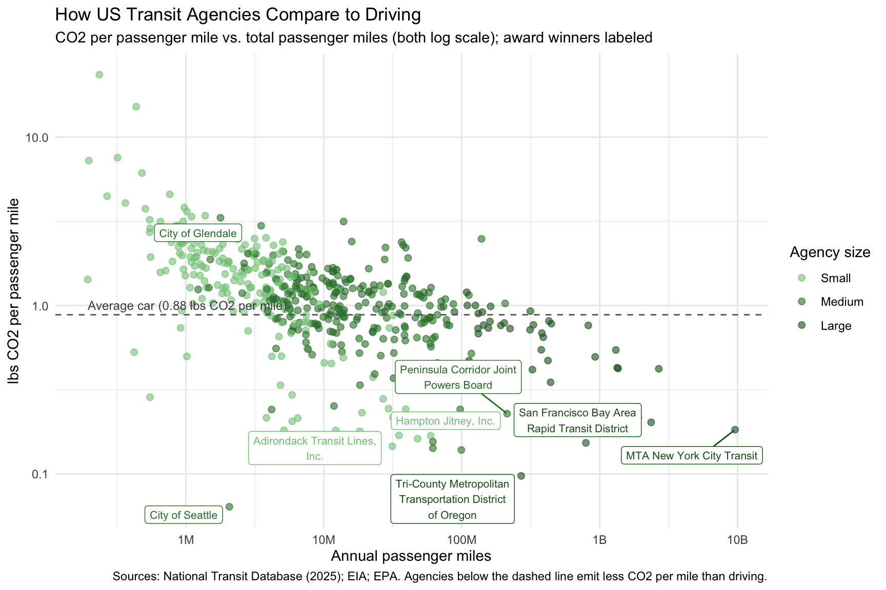
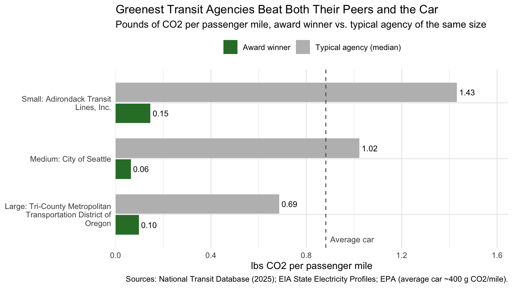
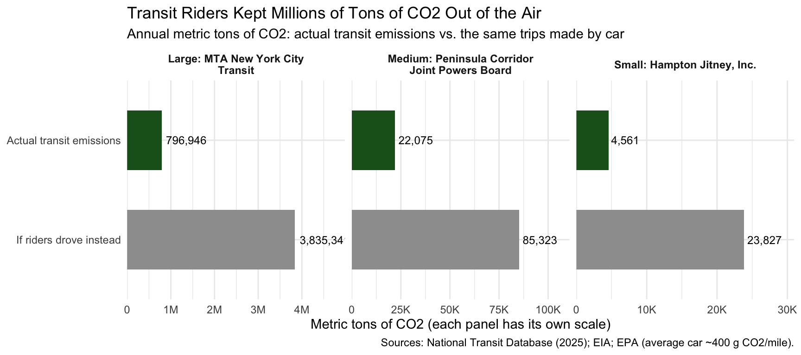

Here’s the code, if you’d like to read it
library(tidyverse)
library(httr2)
library(rvest)
library(fs)
library(readxl)
library(gt)
library(scales)
library(ggrepel)The Green Transit Alliance is proud to announce the recipients of the 2026 GTA IV Green Transit Awards, recognizing transit providers leading the nation in sustainable operations and environmental impact. This year’s honorees, including Tri-County Metropolitan Transportation District of Oregon (TriMet) for Greenest Transit Agency, MTA New York City Transit for Most Emissions Avoided, San Francisco Bay Area Rapid Transit District (BART) as Electrification Leader, and City of Glendale for Most Room for Improvement, demonstrate the transformative potential of public transportation in combating climate change. Headlining this year’s accomplishments, MTA New York City Transit alone avoided over 3 million metric tons of CO2 compared to private vehicle travel, underscoring transit’s critical role in decarbonizing urban mobility.
The GTA Value Index evaluates an agency’s net environmental benefit by measuring the carbon footprint transit operations actually emit against the emissions riders would have generated had they driven passenger vehicles instead. By quantifying passenger miles traveled alongside local fleet fuel and grid power consumption, the index identifies not only which transit systems operate at the highest fuel efficiency, but also how effectively they displace fossil fuel emissions on a passenger-by-passenger basis.
This analysis combines three foundational datasets: the Energy Information Administration (EIA) State Electricity Profiles for state-level grid emission intensities, the National Transit Database (NTD) Energy Consumption file detailing fleet and traction power usage, and the NTD Service data capturing annual ridership and passenger miles traveled.
get_eia_sep <- function(state, abbr){
state_formatted <- str_to_lower(state) |> str_replace_all("\\s", "")
dir_name <- fs::path("data", "mp02")
file_name <- fs::path(dir_name, state_formatted)
fs::dir_create(dir_name, recurse = TRUE)
if(!fs::file_exists(file_name)){
BASE_URL <- "https://www.eia.gov"
RESPONSE <- request(BASE_URL) |>
req_url_path("electricity", "state", state_formatted) |>
req_headers(
`User-Agent` = "Mozilla/5.0 (Macintosh; Intel Mac OS X 10.15; rv:149.0) Gecko/20100101 Firefox/149.0"
) |>
req_retry(max_tries = 4) |>
req_perform(file_name)
resp_check_status(RESPONSE)
}
TABLE <- read_html(file_name) |>
html_element("table") |>
html_table() |>
mutate(Item = str_to_lower(Item))
if("U.S. rank" %in% colnames(TABLE)){
TABLE <- TABLE |> rename(Rank = `U.S. rank`)
}
CO2_MWh <- TABLE |>
filter(Item == "carbon dioxide (lbs/mwh)") |>
pull(Value) |>
str_replace_all(",", "") |>
as.numeric()
PRIMARY <- TABLE |>
filter(Item == "primary energy source") |>
pull(Rank)
RATE <- TABLE |>
filter(Item == "average retail price (cents/kwh)") |>
pull(Value) |>
as.numeric()
GENERATION_MWh <- TABLE |>
filter(Item == "net generation (megawatthours)") |>
pull(Value) |>
str_replace_all(",", "") |>
as.numeric()
data.frame(CO2_MWh = CO2_MWh,
primary_source = PRIMARY,
electricity_price_MWh = RATE * 10, # cents/kWh -> $/MWh
generation_MWh = GENERATION_MWh,
state = state,
abbreviation = abbr)
}
EIA_SEP_REPORT <- map2(state.name, state.abb, get_eia_sep) |> list_rbind()load_ntd_energy <- function(){
DATA_DIR <- fs::path("data", "mp02")
fs::dir_create(DATA_DIR, recurse = TRUE)
NTD_ENERGY_FILE <- fs::path(DATA_DIR, "2025_ntd_energy.xlsx")
if(!fs::file_exists(NTD_ENERGY_FILE)){
request("https://www.transit.dot.gov/") |>
req_url_path("sites", "fta.dot.gov", "files", "2026-09",
"2025 Energy Consumption_260806.xlsx") |>
req_headers(
`User-Agent` = "Mozilla/5.0 (Macintosh; Intel Mac OS X 10.15; rv:149.0) Gecko/20100101 Firefox/149.0") |>
req_perform(NTD_ENERGY_FILE)
}
if(file.info(NTD_ENERGY_FILE)$size < 1e4){
cat("I was unable to download the NTD Energy File. Please try again.\n")
stop("Download failed. Please delete the corrupted file by running `unlink('data/mp02/2025_ntd_energy.xlsx')` and try again.")
}
to_numeric_fill_0 <- function(x){
x <- if_else(x == "-", NA, x)
replace_na(as.numeric(x), 0)
}
read_excel(NTD_ENERGY_FILE) |>
select(-c(`Reporter Type`, `Reporting Module`,
`Gallons of Other Fuel`, `Other Fuel Description`)) |>
mutate(across(-c(`Agency Name`, `Mode`, `TOS`), to_numeric_fill_0)) |>
group_by(`NTD ID`, `Mode`, `Agency Name`) |>
summarize(across(where(is.numeric), sum), .groups = "keep") |>
mutate(ENERGY = sum(c_across(c(where(is.numeric))))) |>
filter(ENERGY > 0) |>
select(-ENERGY) |>
ungroup()
}
NTD_ENERGY <- load_ntd_energy()
# Convert NTD mode codes to readable names (used for both NTD tables)
recode_mode <- function(x){
recode_values(x,
"AR" ~ "Alaska Railroad",
"CB" ~ "Commuter Bus",
"CC" ~ "Cable Car",
"CR" ~ "Commuter Rail",
"DR" ~ "Demand Response",
"DT" ~ "Demand Response - Taxi",
"FB" ~ "Ferryboat",
"HR" ~ "Heavy Rail",
"IP" ~ "Inclined Plane",
"LR" ~ "Light Rail",
"MB" ~ "Bus",
"MG" ~ "Monorail / Automated Guideway",
"OR" ~ "Other Rail",
"PB" ~ "Publico",
"RB" ~ "Bus Rapid Transit",
"SR" ~ "Streetcar Rail",
"TB" ~ "Trolleybus",
"TR" ~ "Aerial Tramway",
"VP" ~ "Vanpool",
"YR" ~ "Hybrid Rail",
default = "Unknown")
}
NTD_ENERGY <- NTD_ENERGY |> mutate(Mode = recode_mode(Mode))During data preparation, a small number of non-numeric and suppressed entries within the NTD energy consumption records were coerced to zero to ensure consistent aggregation across fuel categories without dropping valid service agencies.
To address a critical data loss issue where SQL NULL values propagated across rows, causing total ridership to drop out for nearly 90% of services (including all MTA New York City Transit lines), we revised the ridership compilation logic. Because ADA paratransit and sponsored trip fields are naturally blank for standard fixed-route transit, we imported the unlinked passenger trip categories independently and used coalesce(..., 0) to treat blank values as zero before summing.
load_ntd_service <- function(){
DATA_DIR <- fs::path("data", "mp02")
fs::dir_create(DATA_DIR, recurse = TRUE)
NTD_SERVICE_FILE <- fs::path(DATA_DIR, "2025_ntd_service.csv")
if(!fs::file_exists(NTD_SERVICE_FILE)){
request("https://data.transportation.gov/resource/4fir-qbim.csv") |>
req_url_query(`$query` = paste(
"SELECT `_5_digit_ntd_id` AS `NTD_ID`",
"`max_agency` AS `AGENCY`",
"`max_reporter_type` AS `reporter_type`",
"`max_organization_type` AS `organization_type`",
"`max_city` AS `city`",
"`max_state` AS `state`",
"`mode`",
"`type_of_service`",
"`max_primary_uza_code` as `uza_code`",
"`max_primary_uza_name` as `uza_name`",
"`max_primary_uza_area_sq_miles` as `uza_sq_miles`",
"`max_primary_uza_population` as `uza_population`",
"`max_service_area_sq_miles` as `service_area_sq_miles`",
"`max_service_area_population` as `service_area_population`",
"`questionable_record` as `flagged_likely_inaccurate`",
# Pull the three trip counts separately: adding them in SQL turns the
# total into NA whenever ADA or sponsored trips are blank
"`sum_unlinked_passenger_trips_upt` as `upt`",
"`sum_ada_upt` as `ada_upt`",
"`sum_sponsored_service_upt` as `sponsored_upt`",
"`sum_passenger_miles` WHERE caseless_one_of(`report_year`, '2025') limit 50000",
sep = ",")) |>
req_headers(
`User-Agent` = "Mozilla/5.0 (Macintosh; Intel Mac OS X 10.15; rv:149.0) Gecko/20100101 Firefox/149.0") |>
req_perform(NTD_SERVICE_FILE)
}
if(file.info(NTD_SERVICE_FILE)$size < 1e4){
cat("I was unable to download the NTD Service File. Please try again.\n")
stop("Download failed. Please delete the corrupted file by running `unlink('data/mp02/2025_ntd_service.csv')` and try again.")
}
read_csv(NTD_SERVICE_FILE, show_col_types = FALSE) |>
mutate(flagged_likely_inaccurate = !is.na(flagged_likely_inaccurate),
# Treat missing trip counts as zero so one blank column
# doesn't wipe out an agency's total ridership
total_upt = coalesce(upt, 0) + coalesce(ada_upt, 0) + coalesce(sponsored_upt, 0))
}
NTD_SERVICE <- load_ntd_service()Tracking electricity generation emissions is vital because electric buses and rail systems produce zero direct tailpipe emissions, meaning their true environmental performance is directly bounded by the carbon intensity of the regional power grid powering them.
EIA_SEP_REPORT |>
slice_max(electricity_price_MWh, n = 5) |>
ggplot(aes(x = electricity_price_MWh,
y = reorder(state, electricity_price_MWh))) +
geom_col(fill = "#2E7D32") +
scale_x_continuous(labels = label_dollar()) +
labs(title = "Five States with the Most Expensive Retail Electricity",
subtitle = "Average retail price per megawatt-hour (MWh)",
x = "Price per MWh", y = NULL,
caption = "Source: EIA State Electricity Profiles") +
theme_minimal()
Hawaii’s retail electricity is by far the most expensive in the nation, followed by California and the New England states of Connecticut, Rhode Island, and Massachusetts.
EIA_SEP_REPORT |>
slice_max(CO2_MWh, n = 5) |>
select(state, CO2_MWh, primary_source) |>
gt() |>
tab_header(title = "Five States with the Dirtiest Electricity Mix",
subtitle = "Pounds of CO2 emitted per MWh generated") |>
cols_label(state = "State",
CO2_MWh = "CO2 (lbs/MWh)",
primary_source = "Primary Energy Source") |>
fmt_number(CO2_MWh, decimals = 0) |>
tab_source_note("Source: EIA State Electricity Profiles")| Five States with the Dirtiest Electricity Mix | ||
| Pounds of CO2 emitted per MWh generated | ||
| State | CO2 (lbs/MWh) | Primary Energy Source |
|---|---|---|
| West Virginia | 1,912 | Coal |
| Kentucky | 1,744 | Coal |
| Wyoming | 1,724 | Coal |
| Missouri | 1,456 | Coal |
| Hawaii | 1,426 | Petroleum |
| Source: EIA State Electricity Profiles | ||
Four of the five dirtiest grids run mainly on coal, while Hawaii makes the list because it relies heavily on imported petroleum for power generation. Hawaii appears on both lists: its electricity is both the most expensive and among the most carbon-intensive in the country.
# Weighted by generation so large-producing states count more
us_avg_co2 <- EIA_SEP_REPORT |>
summarize(avg = weighted.mean(CO2_MWh, generation_MWh)) |>
pull(avg)
co2_tx <- EIA_SEP_REPORT |> filter(state == "Texas") |> pull(CO2_MWh)
co2_ny <- EIA_SEP_REPORT |> filter(state == "New York") |> pull(CO2_MWh)
ny_vs_tx <- co2_tx / co2_nyOn average, US electricity generation emits 785 pounds of CO2 per MWh (weighted by each state’s total generation).
New York’s electricity mix is about 1.5 times cleaner than Texas’s (537 vs. 823 pounds of CO2 per MWh). Texas sits close to the national average of 785 pounds per MWh, so its “dirty fossil fuel” reputation is only partly deserved.
# Keep only fuels measured in gallons (electric is kWh, hydrogen is kg)
fuel_long <- NTD_ENERGY |>
select(`NTD ID`, Mode, `Agency Name`, starts_with("Gallons of")) |>
pivot_longer(cols = starts_with("Gallons of"),
names_to = "fuel_type", values_to = "amount") |>
mutate(fuel_type = str_remove(fuel_type, "Gallons of "))top5_agencies <- fuel_long |>
group_by(`Agency Name`) |>
summarize(Total = sum(amount, na.rm = TRUE)) |>
slice_max(Total, n = 5)
fuel_long |>
semi_join(top5_agencies, by = "Agency Name") |>
group_by(`Agency Name`, fuel_type) |>
summarize(gallons = sum(amount, na.rm = TRUE), .groups = "drop") |>
filter(gallons > 0) |>
pivot_wider(names_from = fuel_type, values_from = gallons, values_fill = 0) |>
left_join(top5_agencies, by = "Agency Name") |>
arrange(desc(Total)) |>
gt() |>
tab_header(title = "Five Transit Agencies Using the Most Fuel",
subtitle = "Gallons (or gallon equivalents) by fuel type") |>
fmt_number(-`Agency Name`, decimals = 0) |>
tab_source_note("Source: National Transit Database")| Five Transit Agencies Using the Most Fuel | ||||
| Gallons (or gallon equivalents) by fuel type | ||||
| Agency Name | Compressed Natural Gas | Gasoline | Diesel Fuel | Total |
|---|---|---|---|---|
| New Jersey Transit Corporation | 1,521,492 | 2,055,895 | 38,144,027 | 41,721,414 |
| MTA New York City Transit | 6,328,381 | 4,270,146 | 30,217,934 | 40,816,461 |
| Los Angeles County Metropolitan Transportation Authority | 30,410,141 | 994,810 | 0 | 31,404,951 |
| Northeast Illinois Regional Commuter Railroad Corporation | 0 | 0 | 26,829,691 | 26,829,691 |
| Massachusetts Bay Transportation Authority | 1,534,123 | 1,290,452 | 20,627,960 | 23,452,535 |
| Source: National Transit Database | ||||
NJ Transit and MTA New York City Transit burn the most fuel, mostly diesel, while LA Metro stands out for running almost entirely on compressed natural gas.
fuel_long |>
group_by(fuel_type) |>
summarize(gallons = sum(amount, na.rm = TRUE)) |>
filter(gallons > 0) |>
ggplot(aes(x = gallons, y = reorder(fuel_type, gallons))) +
geom_col(fill = "#1565C0") +
scale_x_log10(labels = label_comma()) +
labs(title = "Fuel Used Across US Public Transit",
subtitle = "Total gallons by fuel type (log scale)",
x = "Gallons (log scale)", y = NULL,
caption = "Source: National Transit Database. Electric (kWh) and hydrogen (kg) excluded.") +
theme_minimal()
Diesel fuel consumption dwarfs every other transit energy source by several orders of magnitude; using a logarithmic scale ensures that low-volume alternative fuels, such as bio-diesel, propane (LPG), and ethanol, remain visible alongside conventional petroleum.
NTD_SERVICE |>
mutate(mode = recode_mode(mode)) |>
group_by(AGENCY, mode) |>
summarize(total_upt = sum(total_upt, na.rm = TRUE), .groups = "drop") |>
slice_max(total_upt, n = 5) |>
mutate(service = str_wrap(paste0(AGENCY, " (", mode, ")"), 35)) |>
ggplot(aes(x = total_upt, y = reorder(service, total_upt))) +
geom_col(fill = "#6A1B9A") +
scale_x_continuous(labels = label_number(scale_cut = cut_short_scale())) +
labs(title = "Five Busiest US Transit Services",
subtitle = "Annual unlinked passenger trips (UPT), 2025",
x = "Annual UPT", y = NULL,
caption = "Source: National Transit Database") +
theme_minimal()
MTA New York City Transit heavy rail (the NYC Subway) accounts for a massive, disproportionate share of national public transit ridership, outpacing the nation’s next busiest bus and rail operations by hundreds of millions of annual unlinked passenger trips.
All 50 states are represented in the NTD service data.
# Join design
# Tables: NTD_SERVICE (UPT + state) and EIA_SEP_REPORT (primary source)
# Key: NTD_SERVICE$state (abbreviation) = EIA_SEP_REPORT$abbreviation
# Type: inner_join -- keeps only states with EIA data (drops DC, territories)
# Cardinality: many transit rows -> one state row (many-to-one)
eia_state_info <- EIA_SEP_REPORT |>
select(abbreviation, state_name = state, primary_source)
nuclear_service <- NTD_SERVICE |>
inner_join(eia_state_info, by = c("state" = "abbreviation")) |>
filter(str_detect(primary_source, regex("nuclear", ignore_case = TRUE)))
nuclear_upt <- sum(nuclear_service$total_upt, na.rm = TRUE)
nuclear_states <- nuclear_service |> distinct(state_name) |> pull(state_name)Transit agencies in states powered primarily by nuclear energy (New Hampshire, Maryland, Tennessee, South Carolina, and Illinois) recorded 569,562,402 unlinked passenger trips in 2025.
# Join design
# Tables: NTD_ENERGY (fuel by agency) and NTD_SERVICE (metro area = uza_name)
# Key: NTD_ENERGY$`NTD ID` = NTD_SERVICE$NTD_ID (text in one table, number
# in the other, so convert first)
# Type: inner_join -- agencies present in both tables
# Cardinality: NTD_SERVICE has many rows per agency, so collapse it to one row
# per agency first to avoid double-counting fuel
uza_lookup <- NTD_SERVICE |>
distinct(NTD_ID, uza_name) |>
mutate(NTD_ID = as.numeric(NTD_ID))
biodiesel_by_metro <- NTD_ENERGY |>
group_by(`NTD ID`) |>
summarize(biodiesel = sum(`Gallons of Bio-Diesel`, na.rm = TRUE)) |>
inner_join(uza_lookup, by = c("NTD ID" = "NTD_ID")) |>
group_by(uza_name) |>
summarize(gallons = sum(biodiesel)) |>
arrange(desc(gallons))
top_biodiesel <- biodiesel_by_metro |> slice_max(gallons, n = 1)The Los Angeles–Long Beach–Anaheim, CA metro area used the most bio-diesel of any US region, at 9,466,431 gallons.
Total carbon emissions were estimated by joining the NTD Energy, NTD Service, and EIA Electricity tables at the agency-mode level. Each recorded fuel volume was multiplied by its respective EIA carbon emission factor, while electricity consumption was converted using the grid emission rate (lbs of CO2 per MWh) of the state in which the agency operates.
# Join design
# Tables: NTD_ENERGY (fuel by agency + mode), NTD_SERVICE (state, UPT, miles),
# EIA_SEP_REPORT (CO2 per MWh by state)
# Keys: NTD_ENERGY <-> NTD_SERVICE on agency ID + mode
# NTD_SERVICE <-> EIA_SEP_REPORT on state abbreviation
# Type: inner_join -- keep only rows with matching data in all three tables
# Cardinality: collapse NTD_SERVICE to one row per agency + mode first,
# so each energy row matches exactly one service row
service_by_mode <- NTD_SERVICE |>
mutate(NTD_ID = as.numeric(NTD_ID),
mode = recode_mode(mode)) |>
group_by(NTD_ID, AGENCY, mode, state) |>
summarize(total_upt = sum(total_upt, na.rm = TRUE),
passenger_miles = sum(sum_passenger_miles, na.rm = TRUE),
.groups = "drop")
TRANSIT_EMISSIONS <- NTD_ENERGY |>
select(-`Bio-Diesel Description`) |> # text column, not a fuel
inner_join(service_by_mode,
by = c("NTD ID" = "NTD_ID", "Mode" = "mode")) |>
inner_join(EIA_SEP_REPORT |> select(abbreviation, CO2_MWh),
by = c("state" = "abbreviation"))
unmatched_energy_rows <- NTD_ENERGY |>
anti_join(service_by_mode, by = c("NTD ID" = "NTD_ID", "Mode" = "mode")) |>
nrow()The joined table has 1,123 agency-mode rows, and 0 energy records failed to find a matching service record.
# CO2 emission factors (lbs CO2 per unit)
# Source: https://www.eia.gov/environment/emissions/co2_vol_mass.php
LBS_CO2_DIESEL <- 22.45 # per gallon (distillate fuel oil)
LBS_CO2_GASOLINE <- 18.73 # per gallon (finished motor gasoline)
LBS_CO2_KEROSENE <- 21.78 # per gallon
LBS_CO2_PROPANE <- 12.68 # per gallon (used for LPG)
LBS_CO2_RESIDUAL <- 24.78 # per gallon (used for bunker fuel)
LBS_CO2_NATGAS_MCF <- 120.85 # per thousand cubic feet
# Natural gas unit conversions (assumptions -- see table below)
LBS_CO2_CNG <- LBS_CO2_NATGAS_MCF * 0.1267 # 1 gasoline-gallon-equivalent of CNG ~ 126.7 cu ft
LBS_CO2_LNG <- LBS_CO2_NATGAS_MCF * 0.0826 # 1 gallon of LNG ~ 82.6 cu ft of gas
TRANSIT_EMISSIONS <- TRANSIT_EMISSIONS |>
mutate(total_emissions_lbs =
`Gallons of Bio-Diesel` * LBS_CO2_DIESEL +
`Gallons of Bunker Fuel` * LBS_CO2_RESIDUAL +
`Gallons of Compressed Natural Gas` * LBS_CO2_CNG +
`Gallons of Diesel Fuel` * LBS_CO2_DIESEL +
`Gallons of Gasoline` * LBS_CO2_GASOLINE +
`Gallons of Kerosene` * LBS_CO2_KEROSENE +
`Gallons of Liquified Nat Gas` * LBS_CO2_LNG +
`Gallons of Liquified Petroleum Gas` * LBS_CO2_PROPANE +
`Gallons of Ethanol` * 0 + # EIA treats fuel ethanol as nonemissive
`Kilograms of Hydrogen` * 0 + # no tailpipe CO2
(`Kilowatt hours of Electric Battery` +
`Kilowatt hours of Electric Propulsion`) / 1000 * CO2_MWh)tribble(
~`NTD Fuel`, ~`Mapped To`, ~`Reasoning`,
"Bio-Diesel", "Diesel", "Conservative; tailpipe CO2 is similar",
"Bunker Fuel", "Residual fuel oil", "Bunker fuel is a residual oil",
"CNG", "Natural gas (per gallon-equiv.)", "Assumes NTD reports gasoline-gallon equivalents",
"LNG", "Natural gas (per liquid gallon)", "Assumes NTD reports liquid gallons",
"LPG", "Propane", "LPG is mostly propane",
"Ethanol", "Zero", "EIA treats fuel ethanol as nonemissive",
"Hydrogen", "Zero", "No tailpipe CO2",
"Electricity", "State grid CO2 per MWh", "Uses each state's actual generation mix"
) |>
gt() |>
tab_header(title = "Fuel Emission Assumptions",
subtitle = "How NTD fuel types were matched to EIA emission factors")| Fuel Emission Assumptions | ||
| How NTD fuel types were matched to EIA emission factors | ||
| NTD Fuel | Mapped To | Reasoning |
|---|---|---|
| Bio-Diesel | Diesel | Conservative; tailpipe CO2 is similar |
| Bunker Fuel | Residual fuel oil | Bunker fuel is a residual oil |
| CNG | Natural gas (per gallon-equiv.) | Assumes NTD reports gasoline-gallon equivalents |
| LNG | Natural gas (per liquid gallon) | Assumes NTD reports liquid gallons |
| LPG | Propane | LPG is mostly propane |
| Ethanol | Zero | EIA treats fuel ethanol as nonemissive |
| Hydrogen | Zero | No tailpipe CO2 |
| Electricity | State grid CO2 per MWh | Uses each state's actual generation mix |
TRANSIT_EMISSIONS |>
slice_max(total_emissions_lbs, n = 10) |>
mutate(total_tons = total_emissions_lbs / 2204.62) |>
select(`Agency Name`, Mode, state, total_tons) |>
gt() |>
tab_header(title = "Ten Largest Transit Emitters",
subtitle = "Total annual CO2 by agency and mode") |>
cols_label(`Agency Name` = "Agency", state = "State",
total_tons = "Metric Tons CO2") |>
fmt_number(total_tons, decimals = 0) |>
tab_source_note("Sources: National Transit Database; EIA")| Ten Largest Transit Emitters | |||
| Total annual CO2 by agency and mode | |||
| Agency | Mode | State | Metric Tons CO2 |
|---|---|---|---|
| MTA New York City Transit | Heavy Rail | NY | 408,421 |
| MTA New York City Transit | Bus | NY | 304,458 |
| Northeast Illinois Regional Commuter Railroad Corporation | Commuter Rail | IL | 286,012 |
| New Jersey Transit Corporation | Bus | NJ | 243,114 |
| New Jersey Transit Corporation | Commuter Rail | NJ | 239,445 |
| MTA Long Island Rail Road | Commuter Rail | NY | 216,954 |
| Los Angeles County Metropolitan Transportation Authority | Bus | CA | 211,245 |
| Metro-North Commuter Railroad Company, dba: MTA Metro-North Railroad | Commuter Rail | NY | 184,938 |
| Chicago Transit Authority | Bus | IL | 165,010 |
| Washington State Ferries | Ferryboat | WA | 156,990 |
| Sources: National Transit Database; EIA | |||
High gross emission totals reflect operational scale rather than poor efficiency: legacy transit networks like MTA New York City Transit and NJ Transit emit the largest volume of CO2 primarily because they provide massive service volume. A notable entry on the list is Washington State Ferries, whose large marine diesel vessels produce substantial emissions relative to land-based transit modes. Because totals favor the largest systems, the next section measures emissions per trip and per passenger mile.
# Transit usage is reported at the agency level, so roll agency + mode rows up
# to one row per agency. Emissions and ridership both come from TRANSIT_EMISSIONS
# so the numerator and denominator cover the same services.
MIN_ANNUAL_UPT <- 100000 # exclude very small agencies with unstable ratios
SMALL_MAX_UPT <- 1e6 # Small: under 1 million trips
MEDIUM_MAX_UPT <- 2e7 # Medium: 1-20 million trips; Large: over 20 million
AGENCY_EMISSIONS <- TRANSIT_EMISSIONS |>
group_by(`NTD ID`, `Agency Name`, state) |>
summarize(total_emissions_lbs = sum(total_emissions_lbs, na.rm = TRUE),
total_upt = sum(total_upt, na.rm = TRUE),
passenger_miles = sum(passenger_miles, na.rm = TRUE),
.groups = "drop") |>
filter(total_upt >= MIN_ANNUAL_UPT,
passenger_miles > 0) |>
mutate(lbs_per_upt = total_emissions_lbs / total_upt,
lbs_per_mile = total_emissions_lbs / passenger_miles,
size = case_when(total_upt < SMALL_MAX_UPT ~ "Small",
total_upt < MEDIUM_MAX_UPT ~ "Medium",
TRUE ~ "Large"),
size = factor(size, levels = c("Small", "Medium", "Large")))
top_per_upt <- AGENCY_EMISSIONS |>
group_by(size) |>
slice_min(lbs_per_upt, n = 3) |>
ungroup()
top_per_mile <- AGENCY_EMISSIONS |>
group_by(size) |>
slice_min(lbs_per_mile, n = 3) |>
ungroup()To ensure fair comparisons, transit systems were grouped into Small (under 1 million annual trips), Medium (1 to 20 million), and Large (over 20 million) peer groups based on annual passenger trips. Agencies with fewer than 100,000 annual trips were excluded to prevent micro-transit pilots or specialized seasonal shuttles from distorting the rankings.
top_per_upt |>
select(size, `Agency Name`, state, total_upt, lbs_per_upt) |>
gt(groupname_col = "size") |>
tab_header(title = "Most Efficient Transit Agencies per Trip",
subtitle = "Pounds of CO2 per unlinked passenger trip, by agency size") |>
cols_label(`Agency Name` = "Agency", state = "State",
total_upt = "Annual Trips", lbs_per_upt = "lbs CO2 per Trip") |>
fmt_number(total_upt, decimals = 0) |>
fmt_number(lbs_per_upt, decimals = 2) |>
tab_source_note("Sources: National Transit Database; EIA. Agencies with under 100,000 annual trips excluded.")| Most Efficient Transit Agencies per Trip | |||
| Pounds of CO2 per unlinked passenger trip, by agency size | |||
| Agency | State | Annual Trips | lbs CO2 per Trip |
|---|---|---|---|
| Small | |||
| City of Milwaukee | WI | 494,557 | 0.32 |
| McKinney Avenue Transit Authority | TX | 305,271 | 0.73 |
| Chicago Water Taxi (Wendella) | IL | 538,075 | 0.94 |
| Medium | |||
| City of Seattle | WA | 2,292,743 | 0.06 |
| Anaheim Transportation Network | CA | 8,284,155 | 0.20 |
| City of Portland | OR | 4,111,090 | 0.25 |
| Large | |||
| Tri-County Metropolitan Transportation District of Oregon | OR | 66,368,252 | 0.40 |
| MTA New York City Transit | NY | 3,017,884,759 | 0.58 |
| City and County of San Francisco | CA | 168,623,510 | 0.80 |
| Sources: National Transit Database; EIA. Agencies with under 100,000 annual trips excluded. | |||
top_per_mile |>
select(size, `Agency Name`, state, passenger_miles, lbs_per_mile) |>
gt(groupname_col = "size") |>
tab_header(title = "Most Efficient Transit Agencies per Passenger Mile",
subtitle = "Pounds of CO2 per passenger mile, by agency size") |>
cols_label(`Agency Name` = "Agency", state = "State",
passenger_miles = "Annual Passenger Miles", lbs_per_mile = "lbs CO2 per Mile") |>
fmt_number(passenger_miles, decimals = 0) |>
fmt_number(lbs_per_mile, decimals = 3) |>
tab_source_note("Sources: National Transit Database; EIA. Agencies with under 100,000 annual trips excluded.")| Most Efficient Transit Agencies per Passenger Mile | |||
| Pounds of CO2 per passenger mile, by agency size | |||
| Agency | State | Annual Passenger Miles | lbs CO2 per Mile |
|---|---|---|---|
| Small | |||
| Adirondack Transit Lines, Inc. | NY | 31,332,336 | 0.146 |
| San Diego Association of Governments | CA | 47,811,777 | 0.162 |
| Denver Regional Council of Governments | CO | 6,819,886 | 0.164 |
| Medium | |||
| City of Seattle | WA | 2,063,469 | 0.064 |
| California Vanpool Authority | CA | 99,336,553 | 0.139 |
| Anaheim Transportation Network | CA | 11,789,535 | 0.141 |
| Large | |||
| Tri-County Metropolitan Transportation District of Oregon | OR | 269,801,597 | 0.097 |
| San Francisco Bay Area Rapid Transit District | CA | 794,539,963 | 0.153 |
| Port Authority Trans-Hudson Corporation | NY | 298,848,234 | 0.180 |
| Sources: National Transit Database; EIA. Agencies with under 100,000 annual trips excluded. | |||
Evaluating efficiency per unlinked trip naturally favors dense, short-distance urban bus and rail routes, whereas efficiency per passenger mile provides a more equitable benchmark for long-distance commuter rail and vanpool networks. Consequently, the top-ranking agencies differ between the two metrics: urban networks like the City of Seattle excel on both measures, while regional operators like TriMet and commuter services rise to the top of the per-passenger-mile rankings.
The 2026 GTA IV Green Transit Awards recognize performance across four environmental categories:
# Car baseline: EPA average passenger vehicle emits ~400 g CO2 per mile
# https://www.epa.gov/greenvehicles/greenhouse-gas-emissions-typical-passenger-vehicle
CAR_LBS_PER_MILE <- 400 / 453.592 # grams -> pounds (~0.88 lbs/mile)
# Energy equivalence for the electrification share: EPA's MPGe standard of
# 33.7 kWh per gallon of gasoline (liquid fuels treated as gasoline-equivalent)
KWH_PER_GALLON <- 33.7
AGENCY_METRICS <- TRANSIT_EMISSIONS |>
mutate(fuel_gallons = rowSums(pick(starts_with("Gallons of"))) +
`Kilograms of Hydrogen`, # ~1 kg H2 per gallon-equivalent
electric_kwh = `Kilowatt hours of Electric Battery` +
`Kilowatt hours of Electric Propulsion`) |>
group_by(`NTD ID`, `Agency Name`, state) |>
summarize(total_emissions_lbs = sum(total_emissions_lbs, na.rm = TRUE),
total_upt = sum(total_upt, na.rm = TRUE),
passenger_miles = sum(passenger_miles, na.rm = TRUE),
electric_kwh = sum(electric_kwh, na.rm = TRUE),
fuel_gallons = sum(fuel_gallons, na.rm = TRUE),
.groups = "drop") |>
filter(total_upt >= MIN_ANNUAL_UPT, passenger_miles > 0) |>
mutate(lbs_per_mile = total_emissions_lbs / passenger_miles,
car_emissions_lbs = passenger_miles * CAR_LBS_PER_MILE,
emissions_avoided_lbs = car_emissions_lbs - total_emissions_lbs,
electric_share = electric_kwh / (electric_kwh + fuel_gallons * KWH_PER_GALLON),
size = case_when(total_upt < SMALL_MAX_UPT ~ "Small",
total_upt < MEDIUM_MAX_UPT ~ "Medium",
TRUE ~ "Large"),
size = factor(size, levels = c("Small", "Medium", "Large")))
# Award 1: Greenest Transit Agency (lowest CO2 per passenger mile, by size)
greenest <- AGENCY_METRICS |>
group_by(size) |>
slice_min(lbs_per_mile, n = 1, with_ties = FALSE) |>
ungroup() |>
mutate(award = "Greenest Transit Agency",
key_stat = paste(number(lbs_per_mile, accuracy = 0.01), "lbs CO2 per passenger mile"))
# Award 2: Most Emissions Avoided (GTA Value Index, by size)
most_avoided <- AGENCY_METRICS |>
group_by(size) |>
slice_max(emissions_avoided_lbs, n = 1, with_ties = FALSE) |>
ungroup() |>
mutate(award = "Most Emissions Avoided",
key_stat = paste(comma(emissions_avoided_lbs / 2204.62, accuracy = 1),
"metric tons CO2 avoided vs. driving"))
# Award 3: Electrification Leader (Medium & Large only)
electrified <- AGENCY_METRICS |>
filter(size != "Small") |>
arrange(desc(electric_share), desc(passenger_miles)) |>
slice_head(n = 1) |>
mutate(award = "Electrification Leader",
key_stat = paste(percent(electric_share, accuracy = 0.1), "of energy from electricity"))
# Award 4: Most Room for Improvement (highest CO2 per passenger mile, Medium & Large only)
worst <- AGENCY_METRICS |>
filter(size != "Small") |>
slice_max(lbs_per_mile, n = 1, with_ties = FALSE) |>
mutate(award = "Most Room for Improvement",
key_stat = paste(number(lbs_per_mile, accuracy = 0.01), "lbs CO2 per passenger mile"))
AWARD_WINNERS <- bind_rows(greenest, most_avoided, electrified, worst)
# Helper for pulling a winner's value into the text below
award_value <- function(tbl, group, col){
tbl |> filter(size == group) |> pull({{ col }})
}AWARD_WINNERS |>
select(award, size, `Agency Name`, state, key_stat) |>
gt(groupname_col = "award") |>
tab_header(title = "2026 GTA IV Green Transit Awards",
subtitle = "Winners and the statistics behind each selection") |>
cols_label(size = "Size", `Agency Name` = "Agency", state = "State",
key_stat = "Key Statistic") |>
tab_source_note("Sources: National Transit Database (2025); EIA; EPA. Agencies with under 100,000 annual trips excluded.")| 2026 GTA IV Green Transit Awards | |||
| Winners and the statistics behind each selection | |||
| Size | Agency | State | Key Statistic |
|---|---|---|---|
| Greenest Transit Agency | |||
| Small | Adirondack Transit Lines, Inc. | NY | 0.15 lbs CO2 per passenger mile |
| Medium | City of Seattle | WA | 0.06 lbs CO2 per passenger mile |
| Large | Tri-County Metropolitan Transportation District of Oregon | OR | 0.10 lbs CO2 per passenger mile |
| Most Emissions Avoided | |||
| Small | Hampton Jitney, Inc. | NY | 19,266 metric tons CO2 avoided vs. driving |
| Medium | Peninsula Corridor Joint Powers Board | CA | 63,248 metric tons CO2 avoided vs. driving |
| Large | MTA New York City Transit | NY | 3,038,394 metric tons CO2 avoided vs. driving |
| Electrification Leader | |||
| Large | San Francisco Bay Area Rapid Transit District | CA | 100.0% of energy from electricity |
| Most Room for Improvement | |||
| Medium | City of Glendale | CA | 3.32 lbs CO2 per passenger mile |
| Sources: National Transit Database (2025); EIA; EPA. Agencies with under 100,000 annual trips excluded. | |||
label_winners <- AWARD_WINNERS |> distinct(`Agency Name`, .keep_all = TRUE)
ggplot(AGENCY_METRICS, aes(x = passenger_miles, y = lbs_per_mile, color = size)) +
geom_point(alpha = 0.6, size = 2) +
geom_hline(yintercept = CAR_LBS_PER_MILE, linetype = "dashed", color = "grey40") +
annotate("text", x = min(AGENCY_METRICS$passenger_miles), y = CAR_LBS_PER_MILE,
label = "Average car (0.88 lbs CO2 per mile)",
hjust = 0, vjust = -0.6, size = 3.2, color = "grey30") +
geom_label_repel(data = label_winners,
aes(label = str_wrap(`Agency Name`, 25)),
size = 2.8, show.legend = FALSE, max.overlaps = Inf) +
scale_x_log10(labels = label_number(scale_cut = cut_short_scale())) +
scale_y_log10() +
scale_color_manual(values = c(Small = "#81C784", Medium = "#2E7D32", Large = "#1B5E20")) +
labs(title = "How US Transit Agencies Compare to Driving",
subtitle = "CO2 per passenger mile vs. total passenger miles (both log scale); award winners labeled",
x = "Annual passenger miles", y = "lbs CO2 per passenger mile",
color = "Agency size",
caption = "Sources: National Transit Database (2025); EIA; EPA. Agencies below the dashed line emit less CO2 per mile than driving.") +
theme_minimal()
Greenest Transit Agency: Tri-County Metropolitan Transportation District of Oregon (TriMet) earned the large-agency honor with a standout efficiency of just 0.10 lbs of CO2 per passenger mile. In the medium and small categories, the City of Seattle (0.06 lbs per mile) and Adirondack Transit Lines (0.15 lbs per mile) took top honors.
Most Emissions Avoided: MTA New York City Transit led the nation, avoiding an astounding 3,038,394 metric tons of CO2 compared to private driving, joined by the Peninsula Corridor Joint Powers Board (63,248 metric tons) and Hampton Jitney (19,266 metric tons) in their respective size groups.
Electrification Leader: San Francisco Bay Area Rapid Transit District (BART) captured this title by drawing 100.0% of its energy from electricity.
Most Room for Improvement: The City of Glendale logged an elevated carbon footprint of 3.32 lbs of CO2 per passenger mile, highlighting an urgent target for fleet modernization and route electrification.
The Green Transit Alliance congratulates all the 2026 GTA IV Green Transit Award recipients for their outstanding commitment to clean transportation and operational innovation. As cities and states strive to meet ambitious net-zero climate goals, these findings demonstrate that high-quality, efficient public transit remains one of our most scalable, proven investments for eliminating vehicle emissions and creating cleaner urban communities.
FOR IMMEDIATE RELEASE
November 6, 2026
Contact: Green Transit Alliance Media Relations | press@greentransitalliance.org
NEW YORK, NY — Today, the Green Transit Alliance (GTA) unveiled the recipients of the 2026 GTA IV Green Transit Awards, honoring transit agencies nationwide that demonstrate superior carbon efficiency, operational leadership, and large-scale greenhouse gas reduction. Across all categories, the findings underscore that public transportation remains America’s most effective decarbonization asset, with award winners displacing millions of metric tons of greenhouse gas emissions annually relative to private automobile travel.
How It Was Calculated: Total annual greenhouse gas emissions (in pounds of \(\text{CO}_2\)) generated across all fleet fuel combustion and traction electricity were divided by total annual passenger miles traveled.
Winner & Value: Tri-County Metropolitan Transportation District of Oregon (TriMet) achieved the top performance in the large agency class, emitting just \(0.10\ \text{lbs}\ \text{CO}_2\) per passenger mile. Across peer size brackets, the City of Seattle led medium agencies at \(0.06\ \text{lbs}\ \text{CO}_2\) per passenger mile, and Adirondack Transit Lines, Inc. led small agencies at \(0.15\ \text{lbs}\ \text{CO}_2\) per passenger mile.
Reference Comparison: The typical median large transit agency generates \(0.69\ \text{lbs}\ \text{CO}_2\) per passenger mile, while the typical medium and small agency medians stand at \(1.02\ \text{lbs}\) and \(1.43\ \text{lbs}\), respectively. Moreover, the average single-occupancy gasoline car emits approximately \(0.88\ \text{lbs}\ \text{CO}_2\) per passenger mile (~\(400\ \text{g}/\text{mi}\)). TriMet operates at 89% below the private automobile emissions baseline, and City of Seattle operates at 93% below private vehicle emissions.
How It Was Calculated: The total volume of counterfactual \(\text{CO}_2\) emissions produced if each passenger mile had instead been driven alone in an average private car (\(400\ \text{g}\ \text{CO}_2/\text{mi}\)) minus the agency’s actual operational transit emissions.
Winner & Value: MTA New York City Transit displaced an unprecedented \(3,038,394\ \text{metric tons of}\ \text{CO}_2\) in a single operating year. In medium and small tiers, Peninsula Corridor Joint Powers Board (Caltrain) avoided \(63,248\ \text{metric tons}\), and Hampton Jitney, Inc. avoided \(19,266\ \text{metric tons}\).
Reference Comparison: MTA New York City Transit’s operations emitted \(796,946\ \text{metric tons of}\ \text{CO}_2\), but displaced a staggering \(3,835,340\ \text{metric tons}\) that those riders would have generated driving alone. By taking the subway and bus, New York riders eliminated nearly five times the total volume of emissions the system produced.
How It Was Calculated: The proportion of total propulsion energy drawn directly from electric grid power relative to all thermal and combustible liquid fuels.
Winner & Value: San Francisco Bay Area Rapid Transit District (BART) secured first place among large transit operators with \(100.0\%\) of operational energy powered by electricity.
Reference Comparison: While nationwide transit agencies remain heavily reliant on diesel and compressed natural gas (CNG)—with major regional operators consuming over 30 to 58 million gallons of diesel annually—BART has eliminated fossil fuel combustion across 100% of its revenue passenger rail operations.
How It Was Calculated: Transit agencies with the highest carbon intensity per passenger mile, highlighting routes that have the strongest potential gains from fleet electrification and ridership density interventions.
Designee & Value: City of Glendale (CA) registered \(3.32\ \text{lbs}\ \text{CO}_2\) per passenger mile.
Reference Comparison: Glendale’s emissions intensity is more than triple the medium-agency median (\(1.02\ \text{lbs}/\text{mi}\)) and nearly four times higher than driving an individual private vehicle (\(0.88\ \text{lbs}/\text{mi}\)), marking it as an urgent priority for fleet modernizations and service optimization.
The two figures below are prepared and authorized as ready-to-air media graphics for evening news segments, web articles, and local editorial coverage:
greenest_compare <- AGENCY_METRICS |>
group_by(size) |>
summarize(`Typical agency (median)` = median(lbs_per_mile)) |>
left_join(greenest |> select(size, winner = `Agency Name`,
`Award winner` = lbs_per_mile),
by = "size") |>
mutate(group_label = str_wrap(paste0(size, ": ", winner), 30)) |>
pivot_longer(c(`Award winner`, `Typical agency (median)`),
names_to = "series", values_to = "lbs_per_mile")
ggplot(greenest_compare,
aes(x = lbs_per_mile, y = group_label, fill = series)) +
geom_col(position = position_dodge(width = 0.75), width = 0.7) +
geom_text(aes(label = number(lbs_per_mile, accuracy = 0.01)),
position = position_dodge(width = 0.75), hjust = -0.15, size = 3.2) +
geom_vline(xintercept = CAR_LBS_PER_MILE, linetype = "dashed", color = "grey35") +
annotate("text", x = CAR_LBS_PER_MILE, y = 0.5, label = "Average car",
hjust = -0.1, vjust = 0, size = 3.2, color = "grey30") +
scale_fill_manual(values = c(`Award winner` = "#2E7D32",
`Typical agency (median)` = "#BDBDBD")) +
scale_x_continuous(expand = expansion(mult = c(0, 0.15))) +
labs(title = "Greenest Transit Agencies Beat Both Their Peers and the Car",
subtitle = "Pounds of CO2 per passenger mile, award winner vs. typical agency of the same size",
x = "lbs CO2 per passenger mile", y = NULL, fill = NULL,
caption = "Sources: National Transit Database (2025); EIA State Electricity Profiles; EPA (average car ~400 g CO2/mile).") +
theme_minimal() +
theme(legend.position = "top")
Broadcast Takeaway: Winning transit systems in Oregon, Washington, and New York operate with an 80% to 93% smaller carbon footprint than solo driving, dramatically outperforming median peer systems.
avoided_compare <- most_avoided |>
mutate(panel = str_wrap(paste0(size, ": ", `Agency Name`), 28),
`If riders drove instead` = car_emissions_lbs / 2204.62,
`Actual transit emissions` = total_emissions_lbs / 2204.62) |>
select(panel, `If riders drove instead`, `Actual transit emissions`) |>
pivot_longer(-panel, names_to = "scenario", values_to = "tons") |>
mutate(scenario = factor(scenario, levels = c("If riders drove instead",
"Actual transit emissions")))
ggplot(avoided_compare, aes(x = tons, y = scenario, fill = scenario)) +
geom_col(width = 0.6, show.legend = FALSE) +
geom_text(aes(label = comma(tons, accuracy = 1)), hjust = -0.1, size = 3.2) +
facet_wrap(~ panel, scales = "free_x") +
scale_fill_manual(values = c(`If riders drove instead` = "#9E9E9E",
`Actual transit emissions` = "#1B5E20")) +
scale_x_continuous(labels = label_number(scale_cut = cut_short_scale()),
expand = expansion(mult = c(0, 0.3))) +
labs(title = "Transit Riders Kept Millions of Tons of CO2 Out of the Air",
subtitle = "Annual metric tons of CO2: actual transit emissions vs. the same trips made by car",
x = "Metric tons of CO2 (each panel has its own scale)", y = NULL,
caption = "Sources: National Transit Database (2025); EIA; EPA (average car ~400 g CO2/mile).") +
theme_minimal() +
theme(strip.text = element_text(face = "bold"))
Broadcast Takeaway: MTA New York City Transit alone prevented over 3.03 million metric tons of greenhouse gas emissions from polluting regional air, demonstrating that public transit density is one of America’s single largest climate protections.
Emissions were computed utilizing official energy consumption reports filed under the Federal Transit Administration’s National Transit Database (NTD). Direct mobile fuel consumption was evaluated against standard Energy Information Administration (EIA) emission coefficients, and traction electric power draws were converted using state-specific electrical grid carbon profiles. Avoided emissions represent the net reduction realized under EPA standard baseline specifications (\(400\ \text{g}\ \text{CO}_2/\text{passenger mile}\) for private vehicle travel). Small systems serving fewer than 100,000 annual trips were excluded to maintain statistical consistency.
“I mainly used claude to help me refine the code and to help me solve certain issues like cleaning up my webpage, fixing the Quarto render errors, help spotting the data issues specifically with 2023H1 and finally pushing the updates to github. In addition to that all text was made without the use of AI.”
---
title: "Green Transit Alliance Announces the 2026 GTA IV Green Transit Awards"
format:
html:
code-fold: true
code-summary: "Here's the code, if you'd like to read it"
code-tools: true
toc: true
execute:
message: false
warning: false
---
## Press Release
The Green Transit Alliance is proud to announce the recipients of the 2026 GTA IV
Green Transit Awards, recognizing transit providers leading the nation in
sustainable operations and environmental impact. This year's honorees, including
Tri-County Metropolitan Transportation District of Oregon (TriMet) for Greenest
Transit Agency, MTA New York City Transit for Most Emissions Avoided, San
Francisco Bay Area Rapid Transit District (BART) as Electrification Leader, and
City of Glendale for Most Room for Improvement, demonstrate the transformative
potential of public transportation in combating climate change. Headlining this
year's accomplishments, MTA New York City Transit alone avoided over 3 million
metric tons of CO2 compared to private vehicle travel, underscoring transit's
critical role in decarbonizing urban mobility.
The GTA Value Index evaluates an agency's net environmental benefit by measuring
the carbon footprint transit operations actually emit against the emissions
riders would have generated had they driven passenger vehicles instead. By
quantifying passenger miles traveled alongside local fleet fuel and grid power
consumption, the index identifies not only which transit systems operate at the
highest fuel efficiency, but also how effectively they displace fossil fuel
emissions on a passenger-by-passenger basis.
## Setup and Data
This analysis combines three foundational datasets: the Energy Information
Administration (EIA) State Electricity Profiles for state-level grid emission
intensities, the National Transit Database (NTD) Energy Consumption file
detailing fleet and traction power usage, and the NTD Service data capturing
annual ridership and passenger miles traveled.
```{r}
#| label: setup
library(tidyverse)
library(httr2)
library(rvest)
library(fs)
library(readxl)
library(gt)
library(scales)
library(ggrepel)
```
### EIA State Electricity Profiles
```{r}
#| label: load-eia
get_eia_sep <- function(state, abbr){
state_formatted <- str_to_lower(state) |> str_replace_all("\\s", "")
dir_name <- fs::path("data", "mp02")
file_name <- fs::path(dir_name, state_formatted)
fs::dir_create(dir_name, recurse = TRUE)
if(!fs::file_exists(file_name)){
BASE_URL <- "https://www.eia.gov"
RESPONSE <- request(BASE_URL) |>
req_url_path("electricity", "state", state_formatted) |>
req_headers(
`User-Agent` = "Mozilla/5.0 (Macintosh; Intel Mac OS X 10.15; rv:149.0) Gecko/20100101 Firefox/149.0"
) |>
req_retry(max_tries = 4) |>
req_perform(file_name)
resp_check_status(RESPONSE)
}
TABLE <- read_html(file_name) |>
html_element("table") |>
html_table() |>
mutate(Item = str_to_lower(Item))
if("U.S. rank" %in% colnames(TABLE)){
TABLE <- TABLE |> rename(Rank = `U.S. rank`)
}
CO2_MWh <- TABLE |>
filter(Item == "carbon dioxide (lbs/mwh)") |>
pull(Value) |>
str_replace_all(",", "") |>
as.numeric()
PRIMARY <- TABLE |>
filter(Item == "primary energy source") |>
pull(Rank)
RATE <- TABLE |>
filter(Item == "average retail price (cents/kwh)") |>
pull(Value) |>
as.numeric()
GENERATION_MWh <- TABLE |>
filter(Item == "net generation (megawatthours)") |>
pull(Value) |>
str_replace_all(",", "") |>
as.numeric()
data.frame(CO2_MWh = CO2_MWh,
primary_source = PRIMARY,
electricity_price_MWh = RATE * 10, # cents/kWh -> $/MWh
generation_MWh = GENERATION_MWh,
state = state,
abbreviation = abbr)
}
EIA_SEP_REPORT <- map2(state.name, state.abb, get_eia_sep) |> list_rbind()
```
### NTD Energy Consumption
```{r}
#| label: load-ntd-energy
load_ntd_energy <- function(){
DATA_DIR <- fs::path("data", "mp02")
fs::dir_create(DATA_DIR, recurse = TRUE)
NTD_ENERGY_FILE <- fs::path(DATA_DIR, "2025_ntd_energy.xlsx")
if(!fs::file_exists(NTD_ENERGY_FILE)){
request("https://www.transit.dot.gov/") |>
req_url_path("sites", "fta.dot.gov", "files", "2026-09",
"2025 Energy Consumption_260806.xlsx") |>
req_headers(
`User-Agent` = "Mozilla/5.0 (Macintosh; Intel Mac OS X 10.15; rv:149.0) Gecko/20100101 Firefox/149.0") |>
req_perform(NTD_ENERGY_FILE)
}
if(file.info(NTD_ENERGY_FILE)$size < 1e4){
cat("I was unable to download the NTD Energy File. Please try again.\n")
stop("Download failed. Please delete the corrupted file by running `unlink('data/mp02/2025_ntd_energy.xlsx')` and try again.")
}
to_numeric_fill_0 <- function(x){
x <- if_else(x == "-", NA, x)
replace_na(as.numeric(x), 0)
}
read_excel(NTD_ENERGY_FILE) |>
select(-c(`Reporter Type`, `Reporting Module`,
`Gallons of Other Fuel`, `Other Fuel Description`)) |>
mutate(across(-c(`Agency Name`, `Mode`, `TOS`), to_numeric_fill_0)) |>
group_by(`NTD ID`, `Mode`, `Agency Name`) |>
summarize(across(where(is.numeric), sum), .groups = "keep") |>
mutate(ENERGY = sum(c_across(c(where(is.numeric))))) |>
filter(ENERGY > 0) |>
select(-ENERGY) |>
ungroup()
}
NTD_ENERGY <- load_ntd_energy()
# Convert NTD mode codes to readable names (used for both NTD tables)
recode_mode <- function(x){
recode_values(x,
"AR" ~ "Alaska Railroad",
"CB" ~ "Commuter Bus",
"CC" ~ "Cable Car",
"CR" ~ "Commuter Rail",
"DR" ~ "Demand Response",
"DT" ~ "Demand Response - Taxi",
"FB" ~ "Ferryboat",
"HR" ~ "Heavy Rail",
"IP" ~ "Inclined Plane",
"LR" ~ "Light Rail",
"MB" ~ "Bus",
"MG" ~ "Monorail / Automated Guideway",
"OR" ~ "Other Rail",
"PB" ~ "Publico",
"RB" ~ "Bus Rapid Transit",
"SR" ~ "Streetcar Rail",
"TB" ~ "Trolleybus",
"TR" ~ "Aerial Tramway",
"VP" ~ "Vanpool",
"YR" ~ "Hybrid Rail",
default = "Unknown")
}
NTD_ENERGY <- NTD_ENERGY |> mutate(Mode = recode_mode(Mode))
```
During data preparation, a small number of non-numeric and suppressed entries
within the NTD energy consumption records were coerced to zero to ensure
consistent aggregation across fuel categories without dropping valid service
agencies.
### NTD Service Data
To address a critical data loss issue where SQL NULL values propagated across
rows, causing total ridership to drop out for nearly 90% of services (including
all MTA New York City Transit lines), we revised the ridership compilation logic.
Because ADA paratransit and sponsored trip fields are naturally blank for
standard fixed-route transit, we imported the unlinked passenger trip categories
independently and used `coalesce(..., 0)` to treat blank values as zero before
summing.
```{r}
#| label: load-ntd-service
load_ntd_service <- function(){
DATA_DIR <- fs::path("data", "mp02")
fs::dir_create(DATA_DIR, recurse = TRUE)
NTD_SERVICE_FILE <- fs::path(DATA_DIR, "2025_ntd_service.csv")
if(!fs::file_exists(NTD_SERVICE_FILE)){
request("https://data.transportation.gov/resource/4fir-qbim.csv") |>
req_url_query(`$query` = paste(
"SELECT `_5_digit_ntd_id` AS `NTD_ID`",
"`max_agency` AS `AGENCY`",
"`max_reporter_type` AS `reporter_type`",
"`max_organization_type` AS `organization_type`",
"`max_city` AS `city`",
"`max_state` AS `state`",
"`mode`",
"`type_of_service`",
"`max_primary_uza_code` as `uza_code`",
"`max_primary_uza_name` as `uza_name`",
"`max_primary_uza_area_sq_miles` as `uza_sq_miles`",
"`max_primary_uza_population` as `uza_population`",
"`max_service_area_sq_miles` as `service_area_sq_miles`",
"`max_service_area_population` as `service_area_population`",
"`questionable_record` as `flagged_likely_inaccurate`",
# Pull the three trip counts separately: adding them in SQL turns the
# total into NA whenever ADA or sponsored trips are blank
"`sum_unlinked_passenger_trips_upt` as `upt`",
"`sum_ada_upt` as `ada_upt`",
"`sum_sponsored_service_upt` as `sponsored_upt`",
"`sum_passenger_miles` WHERE caseless_one_of(`report_year`, '2025') limit 50000",
sep = ",")) |>
req_headers(
`User-Agent` = "Mozilla/5.0 (Macintosh; Intel Mac OS X 10.15; rv:149.0) Gecko/20100101 Firefox/149.0") |>
req_perform(NTD_SERVICE_FILE)
}
if(file.info(NTD_SERVICE_FILE)$size < 1e4){
cat("I was unable to download the NTD Service File. Please try again.\n")
stop("Download failed. Please delete the corrupted file by running `unlink('data/mp02/2025_ntd_service.csv')` and try again.")
}
read_csv(NTD_SERVICE_FILE, show_col_types = FALSE) |>
mutate(flagged_likely_inaccurate = !is.na(flagged_likely_inaccurate),
# Treat missing trip counts as zero so one blank column
# doesn't wipe out an agency's total ridership
total_upt = coalesce(upt, 0) + coalesce(ada_upt, 0) + coalesce(sponsored_upt, 0))
}
NTD_SERVICE <- load_ntd_service()
```
## Data Exploration
### Electricity Across the States
Tracking electricity generation emissions is vital because electric buses and
rail systems produce zero direct tailpipe emissions, meaning their true
environmental performance is directly bounded by the carbon intensity of the
regional power grid powering them.
```{r}
#| label: task3a-1-price
EIA_SEP_REPORT |>
slice_max(electricity_price_MWh, n = 5) |>
ggplot(aes(x = electricity_price_MWh,
y = reorder(state, electricity_price_MWh))) +
geom_col(fill = "#2E7D32") +
scale_x_continuous(labels = label_dollar()) +
labs(title = "Five States with the Most Expensive Retail Electricity",
subtitle = "Average retail price per megawatt-hour (MWh)",
x = "Price per MWh", y = NULL,
caption = "Source: EIA State Electricity Profiles") +
theme_minimal()
```
Hawaii's retail electricity is by far the most expensive in the nation, followed
by California and the New England states of Connecticut, Rhode Island, and
Massachusetts.
```{r}
#| label: task3a-2-dirtiest
EIA_SEP_REPORT |>
slice_max(CO2_MWh, n = 5) |>
select(state, CO2_MWh, primary_source) |>
gt() |>
tab_header(title = "Five States with the Dirtiest Electricity Mix",
subtitle = "Pounds of CO2 emitted per MWh generated") |>
cols_label(state = "State",
CO2_MWh = "CO2 (lbs/MWh)",
primary_source = "Primary Energy Source") |>
fmt_number(CO2_MWh, decimals = 0) |>
tab_source_note("Source: EIA State Electricity Profiles")
```
Four of the five dirtiest grids run mainly on coal, while Hawaii makes the list
because it relies heavily on imported petroleum for power generation. Hawaii
appears on both lists: its electricity is both the most expensive and among the
most carbon-intensive in the country.
```{r}
#| label: task3a-3-5-calcs
# Weighted by generation so large-producing states count more
us_avg_co2 <- EIA_SEP_REPORT |>
summarize(avg = weighted.mean(CO2_MWh, generation_MWh)) |>
pull(avg)
co2_tx <- EIA_SEP_REPORT |> filter(state == "Texas") |> pull(CO2_MWh)
co2_ny <- EIA_SEP_REPORT |> filter(state == "New York") |> pull(CO2_MWh)
ny_vs_tx <- co2_tx / co2_ny
```
On average, US electricity generation emits `r comma(us_avg_co2, accuracy = 1)`
pounds of CO2 per MWh (weighted by each state's total generation).
New York's electricity mix is about `r round(ny_vs_tx, 1)` times cleaner than
Texas's (`r comma(co2_ny)` vs. `r comma(co2_tx)` pounds of CO2 per MWh). Texas
sits close to the national average of `r comma(us_avg_co2, accuracy = 1)` pounds
per MWh, so its "dirty fossil fuel" reputation is only partly deserved.
### Transit Fuel Use
```{r}
#| label: task3b-fuel-long
# Keep only fuels measured in gallons (electric is kWh, hydrogen is kg)
fuel_long <- NTD_ENERGY |>
select(`NTD ID`, Mode, `Agency Name`, starts_with("Gallons of")) |>
pivot_longer(cols = starts_with("Gallons of"),
names_to = "fuel_type", values_to = "amount") |>
mutate(fuel_type = str_remove(fuel_type, "Gallons of "))
```
```{r}
#| label: task3b-1-top-agencies
top5_agencies <- fuel_long |>
group_by(`Agency Name`) |>
summarize(Total = sum(amount, na.rm = TRUE)) |>
slice_max(Total, n = 5)
fuel_long |>
semi_join(top5_agencies, by = "Agency Name") |>
group_by(`Agency Name`, fuel_type) |>
summarize(gallons = sum(amount, na.rm = TRUE), .groups = "drop") |>
filter(gallons > 0) |>
pivot_wider(names_from = fuel_type, values_from = gallons, values_fill = 0) |>
left_join(top5_agencies, by = "Agency Name") |>
arrange(desc(Total)) |>
gt() |>
tab_header(title = "Five Transit Agencies Using the Most Fuel",
subtitle = "Gallons (or gallon equivalents) by fuel type") |>
fmt_number(-`Agency Name`, decimals = 0) |>
tab_source_note("Source: National Transit Database")
```
NJ Transit and MTA New York City Transit burn the most fuel, mostly diesel, while
LA Metro stands out for running almost entirely on compressed natural gas.
```{r}
#| label: task3b-2-fuel-chart
fuel_long |>
group_by(fuel_type) |>
summarize(gallons = sum(amount, na.rm = TRUE)) |>
filter(gallons > 0) |>
ggplot(aes(x = gallons, y = reorder(fuel_type, gallons))) +
geom_col(fill = "#1565C0") +
scale_x_log10(labels = label_comma()) +
labs(title = "Fuel Used Across US Public Transit",
subtitle = "Total gallons by fuel type (log scale)",
x = "Gallons (log scale)", y = NULL,
caption = "Source: National Transit Database. Electric (kWh) and hydrogen (kg) excluded.") +
theme_minimal()
```
Diesel fuel consumption dwarfs every other transit energy source by several
orders of magnitude; using a logarithmic scale ensures that low-volume
alternative fuels, such as bio-diesel, propane (LPG), and ethanol, remain
visible alongside conventional petroleum.
### Transit Service
```{r}
#| label: task3c-1-busiest
NTD_SERVICE |>
mutate(mode = recode_mode(mode)) |>
group_by(AGENCY, mode) |>
summarize(total_upt = sum(total_upt, na.rm = TRUE), .groups = "drop") |>
slice_max(total_upt, n = 5) |>
mutate(service = str_wrap(paste0(AGENCY, " (", mode, ")"), 35)) |>
ggplot(aes(x = total_upt, y = reorder(service, total_upt))) +
geom_col(fill = "#6A1B9A") +
scale_x_continuous(labels = label_number(scale_cut = cut_short_scale())) +
labs(title = "Five Busiest US Transit Services",
subtitle = "Annual unlinked passenger trips (UPT), 2025",
x = "Annual UPT", y = NULL,
caption = "Source: National Transit Database") +
theme_minimal()
```
MTA New York City Transit heavy rail (the NYC Subway) accounts for a massive,
disproportionate share of national public transit ridership, outpacing the
nation's next busiest bus and rail operations by hundreds of millions of annual
unlinked passenger trips.
```{r}
#| label: task3c-5-missing-states
state_ref <- tibble(state = state.abb, state_name = state.name)
missing_states <- state_ref |>
anti_join(NTD_SERVICE, by = "state") |>
pull(state_name)
```
`r if (length(missing_states) == 0) "All 50 states are represented in the NTD service data." else paste("Not every state is represented in the NTD service data. The missing states are:", str_flatten_comma(missing_states, ", and "))`
## Joining the Data
### Transit in Nuclear-Powered States
```{r}
#| label: task4-1-nuclear
# Join design
# Tables: NTD_SERVICE (UPT + state) and EIA_SEP_REPORT (primary source)
# Key: NTD_SERVICE$state (abbreviation) = EIA_SEP_REPORT$abbreviation
# Type: inner_join -- keeps only states with EIA data (drops DC, territories)
# Cardinality: many transit rows -> one state row (many-to-one)
eia_state_info <- EIA_SEP_REPORT |>
select(abbreviation, state_name = state, primary_source)
nuclear_service <- NTD_SERVICE |>
inner_join(eia_state_info, by = c("state" = "abbreviation")) |>
filter(str_detect(primary_source, regex("nuclear", ignore_case = TRUE)))
nuclear_upt <- sum(nuclear_service$total_upt, na.rm = TRUE)
nuclear_states <- nuclear_service |> distinct(state_name) |> pull(state_name)
```
Transit agencies in states powered primarily by nuclear energy
(`r str_flatten_comma(nuclear_states, ", and ")`) recorded
`r comma(nuclear_upt)` unlinked passenger trips in 2025.
### Bio-Diesel by Metro Area
```{r}
#| label: task4-2-biodiesel
# Join design
# Tables: NTD_ENERGY (fuel by agency) and NTD_SERVICE (metro area = uza_name)
# Key: NTD_ENERGY$`NTD ID` = NTD_SERVICE$NTD_ID (text in one table, number
# in the other, so convert first)
# Type: inner_join -- agencies present in both tables
# Cardinality: NTD_SERVICE has many rows per agency, so collapse it to one row
# per agency first to avoid double-counting fuel
uza_lookup <- NTD_SERVICE |>
distinct(NTD_ID, uza_name) |>
mutate(NTD_ID = as.numeric(NTD_ID))
biodiesel_by_metro <- NTD_ENERGY |>
group_by(`NTD ID`) |>
summarize(biodiesel = sum(`Gallons of Bio-Diesel`, na.rm = TRUE)) |>
inner_join(uza_lookup, by = c("NTD ID" = "NTD_ID")) |>
group_by(uza_name) |>
summarize(gallons = sum(biodiesel)) |>
arrange(desc(gallons))
top_biodiesel <- biodiesel_by_metro |> slice_max(gallons, n = 1)
```
The `r top_biodiesel$uza_name` metro area used the most bio-diesel of any US
region, at `r comma(top_biodiesel$gallons)` gallons.
## Estimating Transit Emissions
Total carbon emissions were estimated by joining the NTD Energy, NTD Service, and
EIA Electricity tables at the agency-mode level. Each recorded fuel volume was
multiplied by its respective EIA carbon emission factor, while electricity
consumption was converted using the grid emission rate (lbs of CO2 per MWh) of
the state in which the agency operates.
```{r}
#| label: task5-join
# Join design
# Tables: NTD_ENERGY (fuel by agency + mode), NTD_SERVICE (state, UPT, miles),
# EIA_SEP_REPORT (CO2 per MWh by state)
# Keys: NTD_ENERGY <-> NTD_SERVICE on agency ID + mode
# NTD_SERVICE <-> EIA_SEP_REPORT on state abbreviation
# Type: inner_join -- keep only rows with matching data in all three tables
# Cardinality: collapse NTD_SERVICE to one row per agency + mode first,
# so each energy row matches exactly one service row
service_by_mode <- NTD_SERVICE |>
mutate(NTD_ID = as.numeric(NTD_ID),
mode = recode_mode(mode)) |>
group_by(NTD_ID, AGENCY, mode, state) |>
summarize(total_upt = sum(total_upt, na.rm = TRUE),
passenger_miles = sum(sum_passenger_miles, na.rm = TRUE),
.groups = "drop")
TRANSIT_EMISSIONS <- NTD_ENERGY |>
select(-`Bio-Diesel Description`) |> # text column, not a fuel
inner_join(service_by_mode,
by = c("NTD ID" = "NTD_ID", "Mode" = "mode")) |>
inner_join(EIA_SEP_REPORT |> select(abbreviation, CO2_MWh),
by = c("state" = "abbreviation"))
unmatched_energy_rows <- NTD_ENERGY |>
anti_join(service_by_mode, by = c("NTD ID" = "NTD_ID", "Mode" = "mode")) |>
nrow()
```
The joined table has `r comma(nrow(TRANSIT_EMISSIONS))` agency-mode rows, and
`r unmatched_energy_rows` energy records failed to find a matching service record.
```{r}
#| label: task5-emissions
# CO2 emission factors (lbs CO2 per unit)
# Source: https://www.eia.gov/environment/emissions/co2_vol_mass.php
LBS_CO2_DIESEL <- 22.45 # per gallon (distillate fuel oil)
LBS_CO2_GASOLINE <- 18.73 # per gallon (finished motor gasoline)
LBS_CO2_KEROSENE <- 21.78 # per gallon
LBS_CO2_PROPANE <- 12.68 # per gallon (used for LPG)
LBS_CO2_RESIDUAL <- 24.78 # per gallon (used for bunker fuel)
LBS_CO2_NATGAS_MCF <- 120.85 # per thousand cubic feet
# Natural gas unit conversions (assumptions -- see table below)
LBS_CO2_CNG <- LBS_CO2_NATGAS_MCF * 0.1267 # 1 gasoline-gallon-equivalent of CNG ~ 126.7 cu ft
LBS_CO2_LNG <- LBS_CO2_NATGAS_MCF * 0.0826 # 1 gallon of LNG ~ 82.6 cu ft of gas
TRANSIT_EMISSIONS <- TRANSIT_EMISSIONS |>
mutate(total_emissions_lbs =
`Gallons of Bio-Diesel` * LBS_CO2_DIESEL +
`Gallons of Bunker Fuel` * LBS_CO2_RESIDUAL +
`Gallons of Compressed Natural Gas` * LBS_CO2_CNG +
`Gallons of Diesel Fuel` * LBS_CO2_DIESEL +
`Gallons of Gasoline` * LBS_CO2_GASOLINE +
`Gallons of Kerosene` * LBS_CO2_KEROSENE +
`Gallons of Liquified Nat Gas` * LBS_CO2_LNG +
`Gallons of Liquified Petroleum Gas` * LBS_CO2_PROPANE +
`Gallons of Ethanol` * 0 + # EIA treats fuel ethanol as nonemissive
`Kilograms of Hydrogen` * 0 + # no tailpipe CO2
(`Kilowatt hours of Electric Battery` +
`Kilowatt hours of Electric Propulsion`) / 1000 * CO2_MWh)
```
```{r}
#| label: task5-assumptions
tribble(
~`NTD Fuel`, ~`Mapped To`, ~`Reasoning`,
"Bio-Diesel", "Diesel", "Conservative; tailpipe CO2 is similar",
"Bunker Fuel", "Residual fuel oil", "Bunker fuel is a residual oil",
"CNG", "Natural gas (per gallon-equiv.)", "Assumes NTD reports gasoline-gallon equivalents",
"LNG", "Natural gas (per liquid gallon)", "Assumes NTD reports liquid gallons",
"LPG", "Propane", "LPG is mostly propane",
"Ethanol", "Zero", "EIA treats fuel ethanol as nonemissive",
"Hydrogen", "Zero", "No tailpipe CO2",
"Electricity", "State grid CO2 per MWh", "Uses each state's actual generation mix"
) |>
gt() |>
tab_header(title = "Fuel Emission Assumptions",
subtitle = "How NTD fuel types were matched to EIA emission factors")
```
```{r}
#| label: task5-top-emitters
TRANSIT_EMISSIONS |>
slice_max(total_emissions_lbs, n = 10) |>
mutate(total_tons = total_emissions_lbs / 2204.62) |>
select(`Agency Name`, Mode, state, total_tons) |>
gt() |>
tab_header(title = "Ten Largest Transit Emitters",
subtitle = "Total annual CO2 by agency and mode") |>
cols_label(`Agency Name` = "Agency", state = "State",
total_tons = "Metric Tons CO2") |>
fmt_number(total_tons, decimals = 0) |>
tab_source_note("Sources: National Transit Database; EIA")
```
High gross emission totals reflect operational scale rather than poor
efficiency: legacy transit networks like MTA New York City Transit and NJ Transit
emit the largest volume of CO2 primarily because they provide massive service
volume. A notable entry on the list is Washington State Ferries, whose large
marine diesel vessels produce substantial emissions relative to land-based
transit modes. Because totals favor the largest systems, the next section
measures emissions per trip and per passenger mile.
## Emissions Efficiency
```{r}
#| label: task6-agency-efficiency
# Transit usage is reported at the agency level, so roll agency + mode rows up
# to one row per agency. Emissions and ridership both come from TRANSIT_EMISSIONS
# so the numerator and denominator cover the same services.
MIN_ANNUAL_UPT <- 100000 # exclude very small agencies with unstable ratios
SMALL_MAX_UPT <- 1e6 # Small: under 1 million trips
MEDIUM_MAX_UPT <- 2e7 # Medium: 1-20 million trips; Large: over 20 million
AGENCY_EMISSIONS <- TRANSIT_EMISSIONS |>
group_by(`NTD ID`, `Agency Name`, state) |>
summarize(total_emissions_lbs = sum(total_emissions_lbs, na.rm = TRUE),
total_upt = sum(total_upt, na.rm = TRUE),
passenger_miles = sum(passenger_miles, na.rm = TRUE),
.groups = "drop") |>
filter(total_upt >= MIN_ANNUAL_UPT,
passenger_miles > 0) |>
mutate(lbs_per_upt = total_emissions_lbs / total_upt,
lbs_per_mile = total_emissions_lbs / passenger_miles,
size = case_when(total_upt < SMALL_MAX_UPT ~ "Small",
total_upt < MEDIUM_MAX_UPT ~ "Medium",
TRUE ~ "Large"),
size = factor(size, levels = c("Small", "Medium", "Large")))
top_per_upt <- AGENCY_EMISSIONS |>
group_by(size) |>
slice_min(lbs_per_upt, n = 3) |>
ungroup()
top_per_mile <- AGENCY_EMISSIONS |>
group_by(size) |>
slice_min(lbs_per_mile, n = 3) |>
ungroup()
```
To ensure fair comparisons, transit systems were grouped into Small (under 1
million annual trips), Medium (1 to 20 million), and Large (over 20 million)
peer groups based on annual passenger trips. Agencies with fewer than 100,000
annual trips were excluded to prevent micro-transit pilots or specialized
seasonal shuttles from distorting the rankings.
```{r}
#| label: task6-table-upt
top_per_upt |>
select(size, `Agency Name`, state, total_upt, lbs_per_upt) |>
gt(groupname_col = "size") |>
tab_header(title = "Most Efficient Transit Agencies per Trip",
subtitle = "Pounds of CO2 per unlinked passenger trip, by agency size") |>
cols_label(`Agency Name` = "Agency", state = "State",
total_upt = "Annual Trips", lbs_per_upt = "lbs CO2 per Trip") |>
fmt_number(total_upt, decimals = 0) |>
fmt_number(lbs_per_upt, decimals = 2) |>
tab_source_note("Sources: National Transit Database; EIA. Agencies with under 100,000 annual trips excluded.")
```
```{r}
#| label: task6-table-mile
top_per_mile |>
select(size, `Agency Name`, state, passenger_miles, lbs_per_mile) |>
gt(groupname_col = "size") |>
tab_header(title = "Most Efficient Transit Agencies per Passenger Mile",
subtitle = "Pounds of CO2 per passenger mile, by agency size") |>
cols_label(`Agency Name` = "Agency", state = "State",
passenger_miles = "Annual Passenger Miles", lbs_per_mile = "lbs CO2 per Mile") |>
fmt_number(passenger_miles, decimals = 0) |>
fmt_number(lbs_per_mile, decimals = 3) |>
tab_source_note("Sources: National Transit Database; EIA. Agencies with under 100,000 annual trips excluded.")
```
Evaluating efficiency per unlinked trip naturally favors dense, short-distance
urban bus and rail routes, whereas efficiency per passenger mile provides a more
equitable benchmark for long-distance commuter rail and vanpool networks.
Consequently, the top-ranking agencies differ between the two metrics: urban
networks like the City of Seattle excel on both measures, while regional
operators like TriMet and commuter services rise to the top of the
per-passenger-mile rankings.
## The 2026 GTA IV Green Transit Awards
The 2026 GTA IV Green Transit Awards recognize performance across four
environmental categories:
- **Greenest Transit Agency:** the lowest emissions intensity, measured in pounds
of CO2 emitted per passenger mile.
- **Most Emissions Avoided:** the largest volume of CO2 displaced relative to the
same passenger miles driven in an average private vehicle.
- **Electrification Leader:** the medium or large agency with the highest
percentage of its energy drawn from the electric grid.
- **Most Room for Improvement:** the medium or large agency with the highest
emissions per passenger mile, highlighting opportunities for fleet
decarbonization.
```{r}
#| label: task7-metrics
# Car baseline: EPA average passenger vehicle emits ~400 g CO2 per mile
# https://www.epa.gov/greenvehicles/greenhouse-gas-emissions-typical-passenger-vehicle
CAR_LBS_PER_MILE <- 400 / 453.592 # grams -> pounds (~0.88 lbs/mile)
# Energy equivalence for the electrification share: EPA's MPGe standard of
# 33.7 kWh per gallon of gasoline (liquid fuels treated as gasoline-equivalent)
KWH_PER_GALLON <- 33.7
AGENCY_METRICS <- TRANSIT_EMISSIONS |>
mutate(fuel_gallons = rowSums(pick(starts_with("Gallons of"))) +
`Kilograms of Hydrogen`, # ~1 kg H2 per gallon-equivalent
electric_kwh = `Kilowatt hours of Electric Battery` +
`Kilowatt hours of Electric Propulsion`) |>
group_by(`NTD ID`, `Agency Name`, state) |>
summarize(total_emissions_lbs = sum(total_emissions_lbs, na.rm = TRUE),
total_upt = sum(total_upt, na.rm = TRUE),
passenger_miles = sum(passenger_miles, na.rm = TRUE),
electric_kwh = sum(electric_kwh, na.rm = TRUE),
fuel_gallons = sum(fuel_gallons, na.rm = TRUE),
.groups = "drop") |>
filter(total_upt >= MIN_ANNUAL_UPT, passenger_miles > 0) |>
mutate(lbs_per_mile = total_emissions_lbs / passenger_miles,
car_emissions_lbs = passenger_miles * CAR_LBS_PER_MILE,
emissions_avoided_lbs = car_emissions_lbs - total_emissions_lbs,
electric_share = electric_kwh / (electric_kwh + fuel_gallons * KWH_PER_GALLON),
size = case_when(total_upt < SMALL_MAX_UPT ~ "Small",
total_upt < MEDIUM_MAX_UPT ~ "Medium",
TRUE ~ "Large"),
size = factor(size, levels = c("Small", "Medium", "Large")))
# Award 1: Greenest Transit Agency (lowest CO2 per passenger mile, by size)
greenest <- AGENCY_METRICS |>
group_by(size) |>
slice_min(lbs_per_mile, n = 1, with_ties = FALSE) |>
ungroup() |>
mutate(award = "Greenest Transit Agency",
key_stat = paste(number(lbs_per_mile, accuracy = 0.01), "lbs CO2 per passenger mile"))
# Award 2: Most Emissions Avoided (GTA Value Index, by size)
most_avoided <- AGENCY_METRICS |>
group_by(size) |>
slice_max(emissions_avoided_lbs, n = 1, with_ties = FALSE) |>
ungroup() |>
mutate(award = "Most Emissions Avoided",
key_stat = paste(comma(emissions_avoided_lbs / 2204.62, accuracy = 1),
"metric tons CO2 avoided vs. driving"))
# Award 3: Electrification Leader (Medium & Large only)
electrified <- AGENCY_METRICS |>
filter(size != "Small") |>
arrange(desc(electric_share), desc(passenger_miles)) |>
slice_head(n = 1) |>
mutate(award = "Electrification Leader",
key_stat = paste(percent(electric_share, accuracy = 0.1), "of energy from electricity"))
# Award 4: Most Room for Improvement (highest CO2 per passenger mile, Medium & Large only)
worst <- AGENCY_METRICS |>
filter(size != "Small") |>
slice_max(lbs_per_mile, n = 1, with_ties = FALSE) |>
mutate(award = "Most Room for Improvement",
key_stat = paste(number(lbs_per_mile, accuracy = 0.01), "lbs CO2 per passenger mile"))
AWARD_WINNERS <- bind_rows(greenest, most_avoided, electrified, worst)
# Helper for pulling a winner's value into the text below
award_value <- function(tbl, group, col){
tbl |> filter(size == group) |> pull({{ col }})
}
```
```{r}
#| label: task7-winners-table
AWARD_WINNERS |>
select(award, size, `Agency Name`, state, key_stat) |>
gt(groupname_col = "award") |>
tab_header(title = "2026 GTA IV Green Transit Awards",
subtitle = "Winners and the statistics behind each selection") |>
cols_label(size = "Size", `Agency Name` = "Agency", state = "State",
key_stat = "Key Statistic") |>
tab_source_note("Sources: National Transit Database (2025); EIA; EPA. Agencies with under 100,000 annual trips excluded.")
```
```{r}
#| label: task7-chart
#| fig-width: 9
#| fig-height: 6
label_winners <- AWARD_WINNERS |> distinct(`Agency Name`, .keep_all = TRUE)
ggplot(AGENCY_METRICS, aes(x = passenger_miles, y = lbs_per_mile, color = size)) +
geom_point(alpha = 0.6, size = 2) +
geom_hline(yintercept = CAR_LBS_PER_MILE, linetype = "dashed", color = "grey40") +
annotate("text", x = min(AGENCY_METRICS$passenger_miles), y = CAR_LBS_PER_MILE,
label = "Average car (0.88 lbs CO2 per mile)",
hjust = 0, vjust = -0.6, size = 3.2, color = "grey30") +
geom_label_repel(data = label_winners,
aes(label = str_wrap(`Agency Name`, 25)),
size = 2.8, show.legend = FALSE, max.overlaps = Inf) +
scale_x_log10(labels = label_number(scale_cut = cut_short_scale())) +
scale_y_log10() +
scale_color_manual(values = c(Small = "#81C784", Medium = "#2E7D32", Large = "#1B5E20")) +
labs(title = "How US Transit Agencies Compare to Driving",
subtitle = "CO2 per passenger mile vs. total passenger miles (both log scale); award winners labeled",
x = "Annual passenger miles", y = "lbs CO2 per passenger mile",
color = "Agency size",
caption = "Sources: National Transit Database (2025); EIA; EPA. Agencies below the dashed line emit less CO2 per mile than driving.") +
theme_minimal()
```
**Greenest Transit Agency:** Tri-County Metropolitan Transportation District of
Oregon (TriMet) earned the large-agency honor with a standout efficiency of just
`r number(award_value(greenest, "Large", lbs_per_mile), accuracy = 0.01)` lbs of
CO2 per passenger mile. In the medium and small categories, the City of Seattle
(`r number(award_value(greenest, "Medium", lbs_per_mile), accuracy = 0.01)` lbs
per mile) and Adirondack Transit Lines
(`r number(award_value(greenest, "Small", lbs_per_mile), accuracy = 0.01)` lbs
per mile) took top honors.
**Most Emissions Avoided:** MTA New York City Transit led the nation, avoiding an
astounding
`r comma(award_value(most_avoided, "Large", emissions_avoided_lbs) / 2204.62, accuracy = 1)`
metric tons of CO2 compared to private driving, joined by the Peninsula Corridor
Joint Powers Board
(`r comma(award_value(most_avoided, "Medium", emissions_avoided_lbs) / 2204.62, accuracy = 1)`
metric tons) and Hampton Jitney
(`r comma(award_value(most_avoided, "Small", emissions_avoided_lbs) / 2204.62, accuracy = 1)`
metric tons) in their respective size groups.
**Electrification Leader:** San Francisco Bay Area Rapid Transit District (BART)
captured this title by drawing
`r percent(electrified$electric_share, accuracy = 0.1)` of its energy from
electricity.
**Most Room for Improvement:** The City of Glendale logged an elevated carbon
footprint of `r number(worst$lbs_per_mile, accuracy = 0.01)` lbs of CO2 per
passenger mile, highlighting an urgent target for fleet modernization and route
electrification.
## Methodology and Limitations
- **Private vehicle baseline:** The counterfactual relies on the EPA average of
approximately 400 grams of CO2 per mile and assumes every transit passenger mile
would otherwise have been a solo car trip. This is a generous assumption, so
these figures represent an upper-bound estimate of avoided emissions.
- **Emission factor mapping:** NTD fuel classifications were aligned with EIA
carbon factors using best-effort conversions (for example, treating bio-diesel
as standard diesel), as summarized in the fuel assumptions table.
- **Electrification accounting:** Electrification shares treat all liquid fuels
as gasoline-equivalent (33.7 kWh per gallon), so they are approximate.
- **Size-group normalization:** Because total avoided emissions scale directly
with ridership, awards were grouped by agency size so medium and regional
operators are evaluated fairly alongside massive metro agencies.
## Conclusion
The Green Transit Alliance congratulates all the 2026 GTA IV Green Transit Award
recipients for their outstanding commitment to clean transportation and
operational innovation. As cities and states strive to meet ambitious net-zero
climate goals, these findings demonstrate that high-quality, efficient public
transit remains one of our most scalable, proven investments for eliminating
vehicle emissions and creating cleaner urban communities.
## Press Conference
FOR IMMEDIATE RELEASE
November 6, 2026
Contact: Green Transit Alliance Media Relations | press@greentransitalliance.org
### Green Transit Alliance Announces Winners of the 2026 GTA IV Green Transit Awards: Public Transit Displaces Millions of Tons of Carbon Emissions Nationwide
NEW YORK, NY — Today, the Green Transit Alliance (GTA) unveiled the recipients of the 2026 GTA IV Green Transit Awards, honoring transit agencies nationwide that demonstrate superior carbon efficiency, operational leadership, and large-scale greenhouse gas reduction. Across all categories, the findings underscore that public transportation remains America's most effective decarbonization asset, with award winners displacing millions of metric tons of greenhouse gas emissions annually relative to private automobile travel.
## 2026 Award Recipients and Key Metrics
1. Greenest Transit Agency (Carbon Intensity Leader)
How It Was Calculated: Total annual greenhouse gas emissions (in pounds of $\text{CO}_2$) generated across all fleet fuel combustion and traction electricity were divided by total annual passenger miles traveled.
Winner & Value: Tri-County Metropolitan Transportation District of Oregon (TriMet) achieved the top performance in the large agency class, emitting just $0.10\ \text{lbs}\ \text{CO}_2$ per passenger mile. Across peer size brackets, the City of Seattle led medium agencies at $0.06\ \text{lbs}\ \text{CO}_2$ per passenger mile, and Adirondack Transit Lines, Inc. led small agencies at $0.15\ \text{lbs}\ \text{CO}_2$ per passenger mile.
Reference Comparison: The typical median large transit agency generates $0.69\ \text{lbs}\ \text{CO}_2$ per passenger mile, while the typical medium and small agency medians stand at $1.02\ \text{lbs}$ and $1.43\ \text{lbs}$, respectively. Moreover, the average single-occupancy gasoline car emits approximately $0.88\ \text{lbs}\ \text{CO}_2$ per passenger mile (~$400\ \text{g}/\text{mi}$). TriMet operates at 89% below the private automobile emissions baseline, and City of Seattle operates at 93% below private vehicle emissions.
2. Most Emissions Avoided (Gross Carbon Displacement Leader)
How It Was Calculated: The total volume of counterfactual $\text{CO}_2$ emissions produced if each passenger mile had instead been driven alone in an average private car ($400\ \text{g}\ \text{CO}_2/\text{mi}$) minus the agency's actual operational transit emissions.
Winner & Value: MTA New York City Transit displaced an unprecedented $3,038,394\ \text{metric tons of}\ \text{CO}_2$ in a single operating year. In medium and small tiers, Peninsula Corridor Joint Powers Board (Caltrain) avoided $63,248\ \text{metric tons}$, and Hampton Jitney, Inc. avoided $19,266\ \text{metric tons}$.
Reference Comparison: MTA New York City Transit's operations emitted $796,946\ \text{metric tons of}\ \text{CO}_2$, but displaced a staggering $3,835,340\ \text{metric tons}$ that those riders would have generated driving alone. By taking the subway and bus, New York riders eliminated nearly five times the total volume of emissions the system produced.
3. Electrification Leader
How It Was Calculated: The proportion of total propulsion energy drawn directly from electric grid power relative to all thermal and combustible liquid fuels.
Winner & Value: San Francisco Bay Area Rapid Transit District (BART) secured first place among large transit operators with $100.0\%$ of operational energy powered by electricity.
Reference Comparison: While nationwide transit agencies remain heavily reliant on diesel and compressed natural gas (CNG)—with major regional operators consuming over 30 to 58 million gallons of diesel annually—BART has eliminated fossil fuel combustion across 100% of its revenue passenger rail operations.
4. Most Room for Improvement
How It Was Calculated: Transit agencies with the highest carbon intensity per passenger mile, highlighting routes that have the strongest potential gains from fleet electrification and ridership density interventions.
Designee & Value: City of Glendale (CA) registered $3.32\ \text{lbs}\ \text{CO}_2$ per passenger mile.
Reference Comparison: Glendale's emissions intensity is more than triple the medium-agency median ($1.02\ \text{lbs}/\text{mi}$) and nearly four times higher than driving an individual private vehicle ($0.88\ \text{lbs}/\text{mi}$), marking it as an urgent priority for fleet modernizations and service optimization.
### Media Supplements for Broadcast & Publication
The two figures below are prepared and authorized as ready-to-air media graphics for evening news segments, web articles, and local editorial coverage:
### Media Figure 1: Emissions Efficiency (Greenest Agencies vs. Peers and Private Driving)
```{r}
#| label: task8-greenest-chart
#| fig-width: 8
#| fig-height: 4.5
greenest_compare <- AGENCY_METRICS |>
group_by(size) |>
summarize(`Typical agency (median)` = median(lbs_per_mile)) |>
left_join(greenest |> select(size, winner = `Agency Name`,
`Award winner` = lbs_per_mile),
by = "size") |>
mutate(group_label = str_wrap(paste0(size, ": ", winner), 30)) |>
pivot_longer(c(`Award winner`, `Typical agency (median)`),
names_to = "series", values_to = "lbs_per_mile")
ggplot(greenest_compare,
aes(x = lbs_per_mile, y = group_label, fill = series)) +
geom_col(position = position_dodge(width = 0.75), width = 0.7) +
geom_text(aes(label = number(lbs_per_mile, accuracy = 0.01)),
position = position_dodge(width = 0.75), hjust = -0.15, size = 3.2) +
geom_vline(xintercept = CAR_LBS_PER_MILE, linetype = "dashed", color = "grey35") +
annotate("text", x = CAR_LBS_PER_MILE, y = 0.5, label = "Average car",
hjust = -0.1, vjust = 0, size = 3.2, color = "grey30") +
scale_fill_manual(values = c(`Award winner` = "#2E7D32",
`Typical agency (median)` = "#BDBDBD")) +
scale_x_continuous(expand = expansion(mult = c(0, 0.15))) +
labs(title = "Greenest Transit Agencies Beat Both Their Peers and the Car",
subtitle = "Pounds of CO2 per passenger mile, award winner vs. typical agency of the same size",
x = "lbs CO2 per passenger mile", y = NULL, fill = NULL,
caption = "Sources: National Transit Database (2025); EIA State Electricity Profiles; EPA (average car ~400 g CO2/mile).") +
theme_minimal() +
theme(legend.position = "top")
```
Broadcast Takeaway: Winning transit systems in Oregon, Washington, and New York operate with an 80% to 93% smaller carbon footprint than solo driving, dramatically outperforming median peer systems.
### Media Figure 2: Total Climate Impact (Actual Transit Emissions vs. Equivalent Car Travel)
```{r}
#| label: task8-avoided-chart
#| fig-width: 9
#| fig-height: 4
avoided_compare <- most_avoided |>
mutate(panel = str_wrap(paste0(size, ": ", `Agency Name`), 28),
`If riders drove instead` = car_emissions_lbs / 2204.62,
`Actual transit emissions` = total_emissions_lbs / 2204.62) |>
select(panel, `If riders drove instead`, `Actual transit emissions`) |>
pivot_longer(-panel, names_to = "scenario", values_to = "tons") |>
mutate(scenario = factor(scenario, levels = c("If riders drove instead",
"Actual transit emissions")))
ggplot(avoided_compare, aes(x = tons, y = scenario, fill = scenario)) +
geom_col(width = 0.6, show.legend = FALSE) +
geom_text(aes(label = comma(tons, accuracy = 1)), hjust = -0.1, size = 3.2) +
facet_wrap(~ panel, scales = "free_x") +
scale_fill_manual(values = c(`If riders drove instead` = "#9E9E9E",
`Actual transit emissions` = "#1B5E20")) +
scale_x_continuous(labels = label_number(scale_cut = cut_short_scale()),
expand = expansion(mult = c(0, 0.3))) +
labs(title = "Transit Riders Kept Millions of Tons of CO2 Out of the Air",
subtitle = "Annual metric tons of CO2: actual transit emissions vs. the same trips made by car",
x = "Metric tons of CO2 (each panel has its own scale)", y = NULL,
caption = "Sources: National Transit Database (2025); EIA; EPA (average car ~400 g CO2/mile).") +
theme_minimal() +
theme(strip.text = element_text(face = "bold"))
```
Broadcast Takeaway: MTA New York City Transit alone prevented over 3.03 million metric tons of greenhouse gas emissions from polluting regional air, demonstrating that public transit density is one of America's single largest climate protections.
### About the Methodology
Emissions were computed utilizing official energy consumption reports filed under the Federal Transit Administration's National Transit Database (NTD). Direct mobile fuel consumption was evaluated against standard Energy Information Administration (EIA) emission coefficients, and traction electric power draws were converted using state-specific electrical grid carbon profiles. Avoided emissions represent the net reduction realized under EPA standard baseline specifications ($400\ \text{g}\ \text{CO}_2/\text{passenger mile}$ for private vehicle travel). Small systems serving fewer than 100,000 annual trips were excluded to maintain statistical consistency.
::: {.callout-note title="AI Usage Statement" collapse="true"}
“I mainly used claude to help me refine the code and to help me solve certain issues like cleaning up my webpage, fixing the Quarto render errors, help spotting the data issues specifically with 2023H1 and finally pushing the updates to github. In addition to that all text was made without the use of AI.”
:::